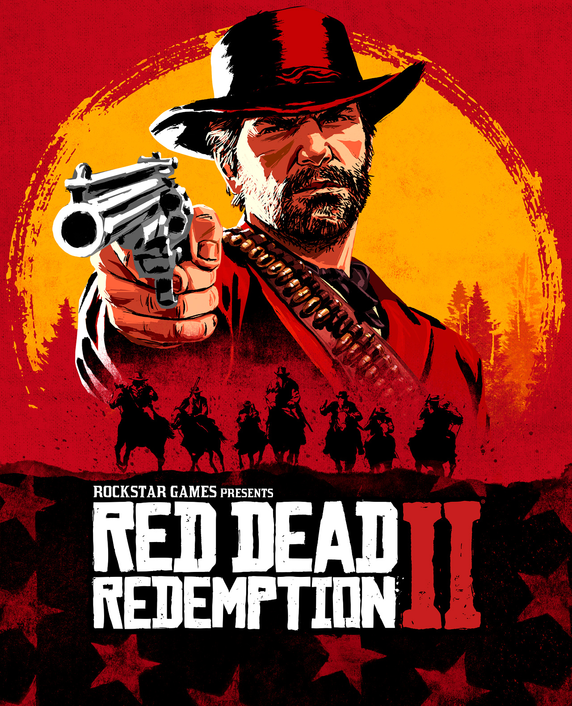

Red Dead Redemption 2

Descripción
Red Dead Redemption 2 nos lleva al Salvaje Oeste en 1899, durante los últimos años de la época de los forajidos. En esta aventura nos ponemos en la piel de Arthur Morgan, un miembro de la banda de Dutch van der Linde que tendrá que luchar por sobrevivir mientras las autoridades y los cazarrecompensas persiguen a su grupo.
Tras un atraco que sale mal, la banda se ve obligada a huir y buscar refugio mientras intenta conseguir dinero para escapar de la ley. A lo largo de la historia viviremos diferentes acontecimientos que pondrán a prueba la lealtad de sus miembros y harán que Arthur empiece a cuestionarse su forma de vida.
El juego cuenta con un enorme mundo abierto inspirado en el Oeste americano, lleno de pueblos, ciudades, montañas, bosques y todo tipo de paisajes naturales. Podremos explorar libremente el mapa, cazar animales, pescar, participar en duelos, realizar misiones secundarias y encontrarnos con personajes y situaciones inesperadas.
En cuanto a la jugabilidad, mantiene la esencia de la primera entrega, pero lleva muchos de sus sistemas a otro nivel. Podremos interactuar con los habitantes, cuidar de nuestro caballo, personalizar nuestras armas y participar en intensos tiroteos utilizando el mítico sistema Dead Eye, que permite ralentizar el tiempo para apuntar con mayor precisión.
Capturas del videojuego


Información del videojuego
| Desarrollador | Plataforma | Fecha de lanzamiento |
|---|---|---|
| Rockstar Studios | PS4, PS5, Xbox Series X/S, PC | 26 de octubre de 2018 |
Mi opinión personal
¡Se viene lo que para mí es la mejor experiencia de rockstar games y, probablemente, una de las mejores experiencias que he tenido en el mundo de los videojuegos: red dead redemption 2!
Como ya comenté en la descripción, esta entrega cambia completamente de enfoque respecto al primer juego, ya que se trata de una precuela. Sin embargo, esta vez no controlamos a John Marston desde el principio, sino al mismísimo Arthur Morgan, que para mí es uno de los personajes mejor escritos que he visto en la industria de los videojuegos.
Al principio, muchos fans de la saga no estaban del todo convencidos con la idea de tener un nuevo protagonista después de haber acompañado a John en la primera entrega. Arthur recibió algunas críticas, pero, a medida que avanzamos en la aventura y vamos descubriendo su historia, su personalidad y las relaciones que mantiene tanto con los miembros de la banda como con su antigua pareja, es difícil no acabar cogiéndole cariño. (Mary Linton... Arthur, tuviste que irte con ella).
Hablando de la banda, algo que no mencioné en la descripción es que la historia nos permite conocer los acontecimientos anteriores a Red Dead Redemption 1 y descubrir qué ocurrió realmente con la banda de Dutch van der Linde. Todo comienza después de un atraco que salió terriblemente mal: el famoso atraco de Blackwater. A partir de ahí, veremos cómo el grupo intenta sobrevivir mientras las tensiones internas van aumentando poco a poco.
Y aquí tenemos a personajes increíbles, como el propio Dutch, cuyo ego y obsesión con sus planes acabarán provocando numerosos problemas. Y cómo olvidarnos de Micah Bell... (MUÉRETE, MICAH). Un personaje que consigue poner de los nervios a cualquiera y que no hace más que complicarle la vida a toda la banda con la famosa excusa de que todo saldrá bien porque «tengo un plan».
La historia cuenta con personajes muy bien construidos, relaciones que evolucionan durante la aventura y giros argumentales que difícilmente te esperas. Y, por supuesto, tiene un desenlace impresionante que consigue dejarte pensando durante bastante tiempo.
Pero no todo es la historia. En cuanto al apartado técnico, los gráficos y la iluminación son una auténtica barbaridad. Incluso a día de hoy sigue siendo uno de los videojuegos con mejor apartado visual que he visto. Los paisajes, los cambios climáticos, los animales y la iluminación consiguen crear un mundo que parece estar vivo.
También tenemos una cantidad de detalles absolutamente increíble. Desde la fauna y el comportamiento de los animales hasta el sistema de honor, que puede influir en cómo nos perciben los demás personajes y en determinados aspectos de la historia.
Un detalle que me encanta son los diarios de Arthur y John. Durante la aventura podemos consultar el diario de Arthur y, más adelante, también tendremos acceso al de John por motivos que no voy a desvelar. Lo curioso es que ambos tienen estilos completamente diferentes. Arthur escribe con bastante delicadeza y realiza dibujos muy detallados, mientras que John tiene una forma de escribir mucho más brusca y sus dibujos... bueno, digamos que se esfuerza. Este tipo de pequeños detalles son los que demuestran el cariño y la atención que Rockstar puso en el juego.
Y ahora, una cosa que me hizo especial ilusión: ¡vuelve una mecánica que ya habíamos visto en San Andreas! ¿Recordáis aquello de cambiar nuestro estado físico y cuidar nuestro peso? Pues aquí vuelve, aunque de una manera más moderada. Podemos influir en el aspecto y la condición física de Arthur dependiendo de cómo nos alimentemos y cuidemos de él. Es una tontería para algunos, pero a mí estos detalles me encantan.
Es verdad que hay gente a la que el juego le parece demasiado lento, especialmente por sus animaciones y el ritmo de algunas misiones. Pero, personalmente, creo que precisamente ahí está parte de su encanto. Rockstar ha querido crear una experiencia pausada, en la que podamos disfrutar del mundo, conocer a sus personajes y sumergirnos en la historia. Si alguien quiere una experiencia mucho más rápida, ¡que se vaya a jugar al Fortnite!
En definitiva, para mí Red Dead Redemption 2 es una auténtica obra de arte. Un videojuego que destaca por su historia, sus personajes, su apartado técnico y la cantidad de detalles que esconde. W ROCKSTAR. Y, sinceramente, creo que GTA VI podría aprovechar muchas de las mecánicas y sistemas que vimos en esta entrega. Me parece una decisión fantástica si finalmente siguen ese camino.